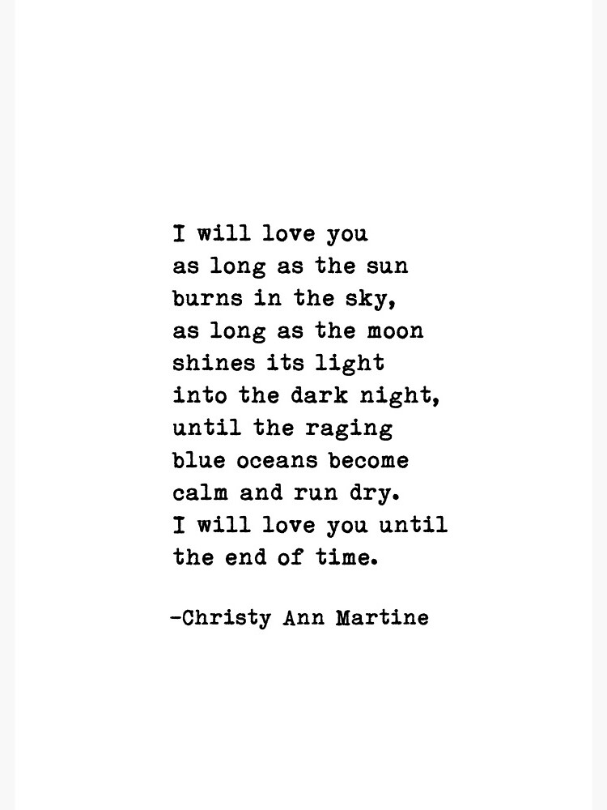
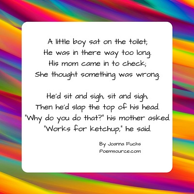
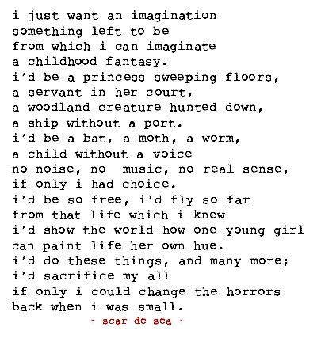

love
a poem about love
love is a strong emotion and when writing about it, it should come with ease. The words may take time to form but strong emotions like these give you an easy start on what to write: about the one you love! this is just one example from the internet about a love poem.

humerous
a poem with humor
this is another poem from the internet that shows a poem with humor. this can be written with funny things that have happened in your own life. this way when writing a poem like this, it can be fun for you to rexperince and for others to enjoy!

imginative
a poem with imagination
imagination is something made up, something your mind has taken from other myths and fantasies to create your own. what is so fun about writing poems like these is that you make things come to life. it is your choice and your words that make this poem unique.